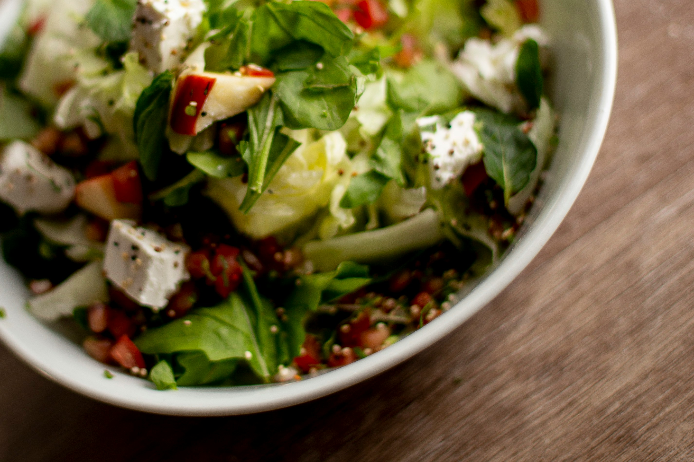

Back to the Odin Recipes.
Greek Salad

Description
This is the Greek salad you’ll crave on repeat—crisp veggies, briny feta and olives, and a few smart twists that take it up a notch. It’s quick to throw together and pairs perfectly with grilled meats, seafood, or Mediterranean mains.
Ingredients
For the Pickled Red Onion
- ½ medium red onion, halved and thinly sliced
- ¼ cup red wine vinegar
- ¼ cup cold water
For the Dressing
- ¼ cup + 2 tablespoons red wine vinegar
- ¾ teaspoon salt
- ¼ teaspoon freshly ground black pepper
- 1 teaspoon honey
- 1 clove garlic, minced
- ¾ teaspoon dried oregano
- ½ cup extra-virgin olive oil
For the Salad
- 1 English or hothouse cucumber, seeded, cut into ¾-in (2-cm) chunks
- 2 bell peppers, red, yellow, or orange, cut into ¾-in (2-cm) chunks
- 1 pint cherry or grape tomatoes, halved
- ¾ cup Kalamata olives
- 3 tablespoons fresh chopped dill
- 8 oz feta cheese, diced
Steps
- Make the pickled onions: Place the red onions in a small bowl. Cover with the vinegar and water; let sit for 15 minutes while you prepare the rest of the salad.
- Make the dressing: In a bowl large enough to hold the salad, whisk together the vinegar, salt, pepper, honey, garlic, and oregano. Whisking vigorously, slowly pour in the olive oil to form an emulsion.
- Assemble the salad: To the dressing, add the cucumber, peppers, tomatoes, olives, and dill.
- Drain the red onions and add them to the salad along with the feta. Toss to combine, then taste and adjust seasoning, if necessary. Serve or refrigerate for up to 3 hours. Let the salad sit out at room temperature for about 30 minutes before serving.